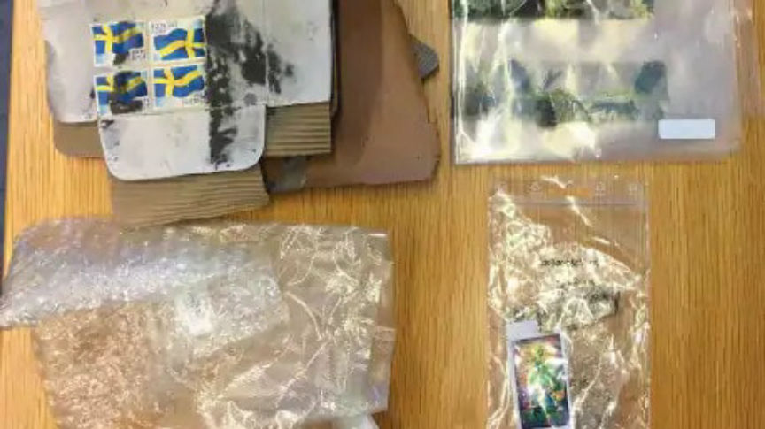
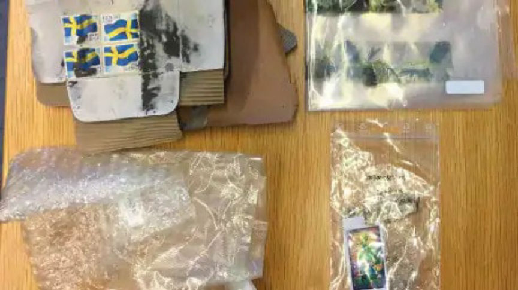

Swedish Man Charged for Selling Cannabis on the Dark Web
A 22-year-old Swedish man accused of using the dark web and PostNord to supply drugs to drug users in all parts of Sweden has been charged with several drug offenses. The defendant allegedly operated from the basement of his mother’s apartment while using encrypted messages and fake names to avoid detection.
According to Prosecutor Pia Björnsson, the 22-year-old would not have been arrested had he not been hanging out with a 28-year-old man who was under investigation by the Malmo police for suspected involvement in several explosions in Malmo. The 22-year-old was reportedly photographed by undercover agents in January 2019 together with the 28-year-old while purchasing sandwiches in a subway in Malmo. As he continued hanging out with the 28-year-old, he also became of interest to the police.
In March, the police acquired and executed a search warrant against the 22-year-old’s residence. The search resulted in the seizure of 1.5 kilograms of cannabis 764 pills believed to be of illicit drugs and electronic devices all hidden in the basement of the house he shared with his mother. The 22-year-old was then arrested and placed in police custody for interrogation. In the interrogation, the defendant refused to give up any details of his operation, forcing the police to look into his activities.
Investigations into the defendant’s activities and analysis on his electronic devices led to the discovery that he was selling drugs on the dark web. In the defendant’s mobile phone, the police found a picture of one of the buyers’ names, address, and the tracking number of the package sent from a grocery store in Malmo. The police reportedly established that the suspect only accepted payments in bitcoins and used fake names when ordering taxis to deliver the drug packages to PostNord. The police suspect the 22-year-old sold drugs worth 296,790 Swedish Krona or $30,360 in bitcoins. They also allege he sold more than 7 kilograms of cannabis in several months.
The prosecution believes the police found one of the 22-year-old’s drug hideout in August 2018 even though they did not tie it to him at the time. According to the prosecution, the police received a complaint from the defendant’s neighbor in late August last year. In the complaint, the neighbor told the police that a strong cannabis scent was coming from the basement of his house. Two police officers sent to the home reportedly found cannabis hidden in the ventilation drum.
The prosecution also disclosed that they had charged eight suspects believed to have bought drugs from the 22-year-old. The police reportedly managed to track the suspects despite the 22-year-old’s encrypted messages. Trials against the 22-year-old and his clients are scheduled to take place in the coming days and months.
According to Prosecutor Pia Björnsson, the 22-year-old would not have been arrested had he not been hanging out with a 28-year-old man who was under investigation by the Malmo police for suspected involvement in several explosions in Malmo. The 22-year-old was reportedly photographed by undercover agents in January 2019 together with the 28-year-old while purchasing sandwiches in a subway in Malmo. As he continued hanging out with the 28-year-old, he also became of interest to the police.
The Police Found Prepared Packaged During the Raid | Credit: expressen.se
In March, the police acquired and executed a search warrant against the 22-year-old’s residence. The search resulted in the seizure of 1.5 kilograms of cannabis 764 pills believed to be of illicit drugs and electronic devices all hidden in the basement of the house he shared with his mother. The 22-year-old was then arrested and placed in police custody for interrogation. In the interrogation, the defendant refused to give up any details of his operation, forcing the police to look into his activities.
Investigations into the defendant’s activities and analysis on his electronic devices led to the discovery that he was selling drugs on the dark web. In the defendant’s mobile phone, the police found a picture of one of the buyers’ names, address, and the tracking number of the package sent from a grocery store in Malmo. The police reportedly established that the suspect only accepted payments in bitcoins and used fake names when ordering taxis to deliver the drug packages to PostNord. The police suspect the 22-year-old sold drugs worth 296,790 Swedish Krona or $30,360 in bitcoins. They also allege he sold more than 7 kilograms of cannabis in several months.
The prosecution believes the police found one of the 22-year-old’s drug hideout in August 2018 even though they did not tie it to him at the time. According to the prosecution, the police received a complaint from the defendant’s neighbor in late August last year. In the complaint, the neighbor told the police that a strong cannabis scent was coming from the basement of his house. Two police officers sent to the home reportedly found cannabis hidden in the ventilation drum.
The prosecution also disclosed that they had charged eight suspects believed to have bought drugs from the 22-year-old. The police reportedly managed to track the suspects despite the 22-year-old’s encrypted messages. Trials against the 22-year-old and his clients are scheduled to take place in the coming days and months.